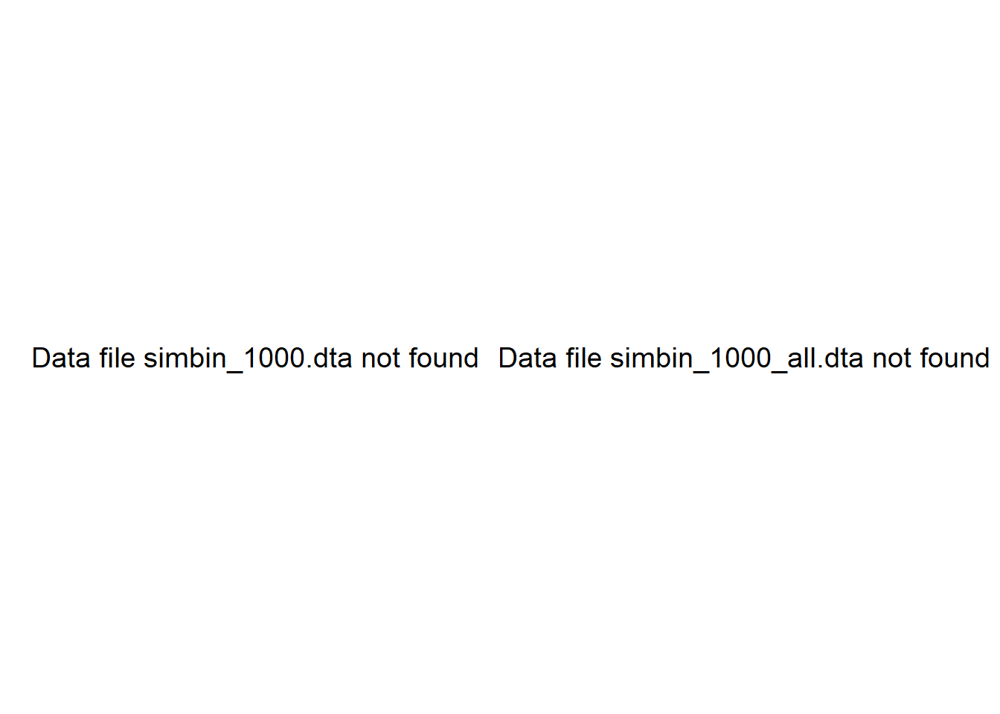
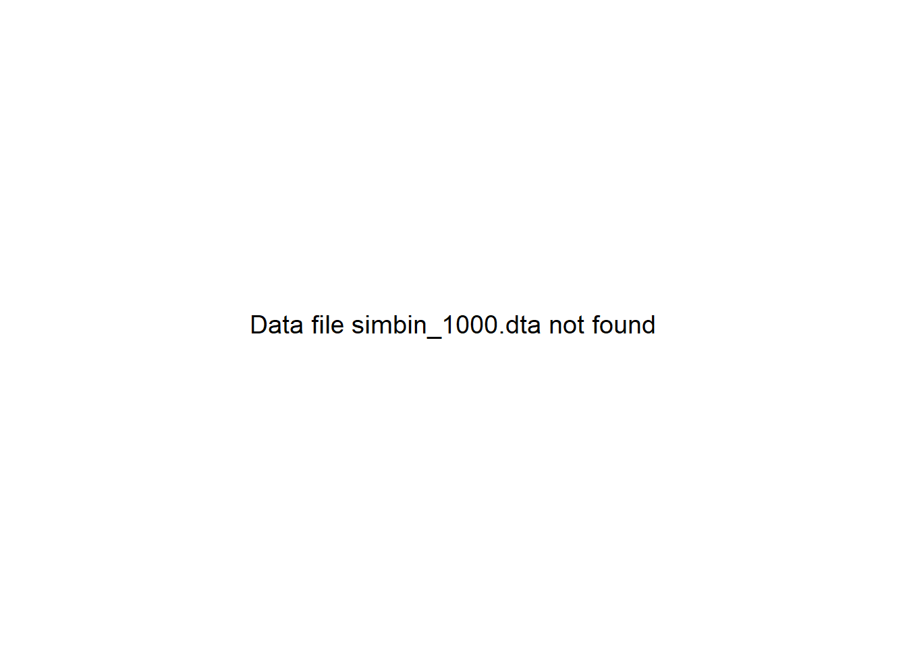

library(dplyr)
library(tidyr)
library(haven)
library(forcats)
library(ggplot2)
library(patchwork)
library(lme4)
library(broom.mixed)
library(geepack)
library(survey)
library(sandwich)
library(lmtest)
library(epitools)
library(broom)
library(purrr)
library(glue)
data_dir <- file.path("..", "mer_data_stata")16 SME Chapter 15: Introduction to Clustered Data
Note
This chapter reproduces and expands upon the analyses from the original Methods in Epidemiologic Research (MER) Chapter 20 (Dohoo, Martin, & Stryhn, 2012) using R with data sourced from ../mer_data_stata/. The chapter covers clustered data analysis - essential methods for handling data where observations are grouped (like patients within clinics, students within schools).
16.1 Replication Notes
- Data dependencies:
../mer_data_stata/brazil.dta,brazil_smpl.dta,simbin_clustclin.dta,simbin_clustind.dta,simcont_clustclin.dta,simcont_clustind.dta. - Required R packages:
dplyr,tidyr,haven,forcats,ggplot2,patchwork,lme4,broom.mixed,geepack,survey,sandwich,lmtest,epitools,broom,purrr,glue. - Setup tips: Install with
install.packages(c("dplyr","tidyr","haven","forcats","ggplot2","patchwork","lme4","broom.mixed","geepack","survey","sandwich","lmtest","epitools","broom","purrr","glue")). - Execution: Run the notebook sequentially to regenerate clustering summaries, mixed models, GEE fits, and survey-weighted estimates.
16.2 Theoretical Background
Understanding Clustered Data
Before analyzing clustered data, let’s understand why it’s special and what problems it creates. Clustered data is extremely common in epidemiological research and requires special analytical methods (Dohoo, Martin, & Stryhn, 2012; Rothman, Huybrechts, & Murray, 2024):
16.2.1 What is Clustering?
Clustering means observations are grouped together. Like: - Patients within clinics (patients in Clinic A are more similar to each other than to patients in Clinic B) - Students within schools - Family members within families
The key insight: People in the same cluster tend to be more similar to each other than to people in other clusters. This violates the independence assumption of regular statistics.
16.2.2 Why Clustering Matters
Imagine you’re studying blood pressure. You measure 10 patients from Clinic A and 10 from Clinic B. If you treat all 20 as independent, you’re wrong! Patients in the same clinic share: - The same doctor - The same clinic environment - Possibly similar patient populations
This means you have less independent information than you think.
16.2.3 The Problem: Pseudo-Replication
Pseudo-replication is treating non-independent observations as independent. It’s like measuring the same person 10 times and thinking you have 10 independent measurements.
Consequences: - Standard errors are too small (you think you’re more certain than you are) - P-values are too small (you think things are more significant than they are) - Confidence intervals are too narrow (you’re overconfident)
16.2.4 Solutions
16.2.5 1. Mixed-Effects Models
Mixed-effects models account for clustering by allowing each cluster to have its own baseline level (random intercept) or its own relationship (random slope).
Think of it like: Allowing each clinic to have its own average blood pressure, while still estimating the overall treatment effect.
16.2.6 2. GEE (Generalized Estimating Equations)
GEE accounts for correlations within clusters without modeling the cluster effects directly. It’s like saying “I know observations are correlated, so I’ll adjust my standard errors.”
16.2.7 3. Survey Methods
Survey-weighted methods use weights and account for the survey design (clustering, stratification, weights) in both estimation and standard errors.
16.2.8 Intraclass Correlation Coefficient (ICC)
ICC measures how similar observations are within clusters: - ICC = 0: No clustering (observations are independent) - ICC = 1: Perfect clustering (all observations in a cluster are identical) - ICC > 0.1: Usually indicates important clustering
16.2.9 Design Effect
Design effect measures how much clustering reduces your effective sample size: - DE = 1: No clustering effect - DE = 2: Clustering makes your sample effectively half as large
16.2.10 Why This Matters
Ignoring clustering can lead to: - False discoveries (thinking you found effects that aren’t real) - Overconfident conclusions - Wasted resources (thinking you need fewer subjects than you actually do)
In simple terms: Clustered data means observations are grouped and similar within groups. Regular statistics assume independence, which doesn’t hold for clustered data. We need special methods (mixed models, GEE, survey methods) to get correct answers. Ignoring clustering gives you wrong answers that look too good to be true.
16.3 Setup
What is this section doing?
This section prepares for analyzing clustered data - data where observations are grouped (like patients in clinics, or families in communities). Think of it like organizing data that has a hierarchy:
- Loading libraries: Getting tools for mixed-effects models and GEE (Generalized Estimating Equations)
- Setting up data directory: Preparing to read clustered datasets
In simple terms: We’re preparing to analyze data where people are grouped together (clustered). This matters because people in the same group tend to be more similar to each other than to people in other groups, and we need special methods to account for this.
16.4 Example 20.1: Hierarchical Structure of brazil.dta
What is this section doing?
This section explores the hierarchical structure of the data - showing how data is organized in levels. Think of it like showing a family tree:
- Levels: Individuals → Families → Communities → Municipalities (like person → family → neighborhood → city)
- Counting at each level: How many families per community? How many communities per municipality?
- Understanding clustering: Seeing how data is nested helps us understand why we need special statistical methods
In simple terms: We’re mapping out the structure of our data - showing how individuals are grouped into families, families into communities, etc. This structure matters because it affects how we analyze the data.
brazil <- read_dta(file.path(data_dir, "brazil.dta")) |>
mutate(across(where(haven::is.labelled), haven::as_factor))
codebook_levels <- brazil |>
summarise(
municipalities = n_distinct(mun),
communities = n_distinct(comm),
families = n_distinct(fam),
individuals = n_distinct(id)
)
household_counts <- brazil |>
count(mun, comm, fam, name = "nhouse")
community_counts <- household_counts |>
count(mun, comm, name = "ncomm")
municipality_counts <- community_counts |>
count(mun, name = "nmun")
list(
codebook = codebook_levels,
household_summary = summary(household_counts$nhouse),
community_summary = summary(community_counts$ncomm),
municipality_summary = summary(municipality_counts$nmun)
)$codebook
# A tibble: 1 × 4
municipalities communities families individuals
<int> <int> <int> <int>
1 21 159 717 3399
$household_summary
Min. 1st Qu. Median Mean 3rd Qu. Max.
2.000 3.000 4.000 4.741 5.000 13.000
$community_summary
Min. 1st Qu. Median Mean 3rd Qu. Max.
1.000 2.000 3.000 4.509 6.500 20.000
$municipality_summary
Min. 1st Qu. Median Mean 3rd Qu. Max.
1.000 5.000 7.000 7.571 10.000 15.000 16.5 Example 20.2: Clustering in Continuous Data
What is this section doing?
This section analyzes continuous outcomes (like blood pressure) that are clustered (like patients within clinics). Think of it like comparing groups while accounting for the fact that people in the same clinic might be similar:
- Mixed-effects models: Models that account for clustering (like “patients within clinics”)
- Random effects: Allowing each clinic to have its own baseline level
- Fixed effects: The overall effects we’re interested in (like treatment effect)
In simple terms: We’re analyzing continuous outcomes (like blood pressure) while accounting for clustering. For example, patients in Clinic A might have higher blood pressure on average than Clinic B, and we need to account for this.
sim_cont_clinic <- read_dta(file.path(data_dir, "simcont_clustclin.dta"))
# Check available column names - clin might be named differently
col_names <- names(sim_cont_clinic)
# Look for clinic/cluster identifier (could be clin, clinic, cluster, id, etc.)
clin_var <- NULL
possible_names <- c("clin", "clinic", "cluster", "clust", "id")
for (name in possible_names) {
if (name %in% col_names) {
clin_var <- name
break
}
}
# If no clinic variable found, check if there's a pattern
if (is.null(clin_var)) {
# Look for any variable that might be a cluster ID
for (col in col_names) {
if (grepl("clin|cluster|id", col, ignore.case = TRUE) &&
!col %in% c("bmi", "X") &&
is.numeric(sim_cont_clinic[[col]])) {
clin_var <- col
break
}
}
}
# If still not found, create a dummy cluster variable or skip mixed model
if (is.null(clin_var)) {
warning("No cluster variable found in simcont_clustclin.dta. Using ordinary regression only.")
lm_clinic <- lm(bmi ~ X, data = sim_cont_clinic)
mixed_clinic <- NULL
collapsed_clinic <- NULL
lm_collapsed <- NULL
} else {
# Rename to 'clin' for consistency if needed
if (clin_var != "clin") {
sim_cont_clinic$clin <- sim_cont_clinic[[clin_var]]
}
lm_clinic <- lm(bmi ~ X, data = sim_cont_clinic)
mixed_clinic <- lmer(bmi ~ X + (1 | clin), data = sim_cont_clinic, REML = TRUE)
collapsed_clinic <- sim_cont_clinic |>
group_by(clin) |>
summarise(
bmi = mean(bmi),
X = mean(X),
.groups = "drop"
)
lm_collapsed <- lm(bmi ~ X, data = collapsed_clinic)
}
# Prepare output
output_list <- list(
ordinary = tidy(lm_clinic)
)
if (!is.null(mixed_clinic)) {
output_list$mixed_effects <- tidy(mixed_clinic)
} else {
output_list$mixed_effects <- tibble(note = "Mixed effects model not fitted - no cluster variable found")
}
if (!is.null(lm_collapsed)) {
output_list$collapsed <- tidy(lm_collapsed)
} else {
output_list$collapsed <- tibble(note = "Collapsed model not fitted - no cluster variable found")
}
output_list$ordinary
# A tibble: 2 × 5
term estimate std.error statistic p.value
<chr> <dbl> <dbl> <dbl> <dbl>
1 (Intercept) 33.6 0.136 246. 0
2 X -3.56 0.200 -17.8 3.89e-70
$mixed_effects
# A tibble: 4 × 6
effect group term estimate std.error statistic
<chr> <chr> <chr> <dbl> <dbl> <dbl>
1 fixed <NA> (Intercept) 34.9 1.06 33.1
2 fixed <NA> X -3.80 1.50 -2.54
3 ran_pars clin sd__(Intercept) 7.41 NA NA
4 ran_pars Residual sd__Observation 8.01 NA NA
$collapsed
# A tibble: 2 × 5
term estimate std.error statistic p.value
<chr> <dbl> <dbl> <dbl> <dbl>
1 (Intercept) 34.9 1.06 33.0 6.95e-55
2 X -3.78 1.50 -2.52 1.32e- 2sim_cont_ind <- read_dta(file.path(data_dir, "simcont_clustind.dta"))
# Find cluster variable
col_names <- names(sim_cont_ind)
clin_var <- NULL
possible_names <- c("clin", "clinic", "cluster", "clust", "id")
for (name in possible_names) {
if (name %in% col_names) {
clin_var <- name
break
}
}
if (is.null(clin_var)) {
for (col in col_names) {
if (grepl("clin|cluster|id", col, ignore.case = TRUE) &&
!col %in% c("bmi", "X") &&
is.numeric(sim_cont_ind[[col]])) {
clin_var <- col
break
}
}
}
if (is.null(clin_var)) {
warning("No cluster variable found in simcont_clustind.dta. Using ordinary regression only.")
lm_ind <- lm(bmi ~ X, data = sim_cont_ind)
mixed_ind <- NULL
} else {
if (clin_var != "clin") {
sim_cont_ind$clin <- sim_cont_ind[[clin_var]]
}
lm_ind <- lm(bmi ~ X, data = sim_cont_ind)
mixed_ind <- lmer(bmi ~ X + (1 | clin), data = sim_cont_ind, REML = TRUE)
}
output_list <- list(ordinary = tidy(lm_ind))
if (!is.null(mixed_ind)) {
output_list$mixed_effects <- tidy(mixed_ind)
} else {
output_list$mixed_effects <- tibble(note = "Mixed effects model not fitted - no cluster variable found")
}
output_list$ordinary
# A tibble: 2 × 5
term estimate std.error statistic p.value
<chr> <dbl> <dbl> <dbl> <dbl>
1 (Intercept) 34.2 0.141 244. 0
2 X -4.98 0.199 -25.0 2.19e-134
$mixed_effects
# A tibble: 4 × 6
effect group term estimate std.error statistic
<chr> <chr> <chr> <dbl> <dbl> <dbl>
1 fixed <NA> (Intercept) 35.6 0.728 48.9
2 fixed <NA> X -4.97 0.149 -33.3
3 ran_pars clin sd__(Intercept) 7.17 NA NA
4 ran_pars Residual sd__Observation 8.04 NA NA 16.6 Example 20.3: Clustering in Binary Data
What is this section doing?
This section analyzes binary outcomes (yes/no, like disease present/absent) that are clustered. Think of it like comparing groups while accounting for clustering:
- Ordinary logistic regression: Ignores clustering (like treating all patients as independent)
- Mixed-effects logistic regression: Accounts for clustering (like recognizing patients in the same clinic might be similar)
- Comparing approaches: We see how ignoring clustering affects our results
In simple terms: We’re analyzing yes/no outcomes (like “does treatment work?”) while accounting for the fact that people in the same clinic might be similar. Ignoring clustering can give us wrong answers.
sim_bin_clinic <- read_dta(file.path(data_dir, "simbin_clustclin.dta"))
# Find cluster variable
col_names <- names(sim_bin_clinic)
clin_var <- NULL
possible_names <- c("clin", "clinic", "cluster", "clust", "id")
for (name in possible_names) {
if (name %in% col_names) {
clin_var <- name
break
}
}
if (is.null(clin_var)) {
for (col in col_names) {
if (grepl("clin|cluster|id", col, ignore.case = TRUE) &&
!col %in% c("Y", "X") &&
is.numeric(sim_bin_clinic[[col]])) {
clin_var <- col
break
}
}
}
glm_bin_clinic <- glm(Y ~ X, family = binomial(), data = sim_bin_clinic)
if (is.null(clin_var)) {
warning("No cluster variable found in simbin_clustclin.dta. Using ordinary logistic regression only.")
glmer_bin_clinic <- NULL
} else {
if (clin_var != "clin") {
sim_bin_clinic$clin <- sim_bin_clinic[[clin_var]]
}
glmer_bin_clinic <- glmer(Y ~ X + (1 | clin), family = binomial(), data = sim_bin_clinic)
}
output_list <- list(
logistic = tidy(glm_bin_clinic, exponentiate = TRUE, conf.int = TRUE)
)
if (!is.null(glmer_bin_clinic)) {
output_list$random_effects <- tidy(glmer_bin_clinic, exponentiate = TRUE, conf.int = TRUE)
} else {
output_list$random_effects <- tibble(note = "Random effects model not fitted - no cluster variable found")
}
output_list$logistic
# A tibble: 2 × 7
term estimate std.error statistic p.value conf.low conf.high
<chr> <dbl> <dbl> <dbl> <dbl> <dbl> <dbl>
1 (Intercept) 0.289 0.0326 -38.1 4.71e-318 0.271 0.308
2 X 1.70 0.0423 12.5 8.06e- 36 1.56 1.84
$random_effects
# A tibble: 3 × 9
effect group term estimate std.error statistic p.value conf.low conf.high
<chr> <chr> <chr> <dbl> <dbl> <dbl> <dbl> <dbl> <dbl>
1 fixed <NA> (Int… 0.271 0.0394 -8.99 2.47e-19 0.204 0.360
2 fixed <NA> X 1.86 0.378 3.05 2.31e- 3 1.25 2.77
3 ran_pars clin sd__… 0.968 NA NA NA NA NA sim_bin_ind <- read_dta(file.path(data_dir, "simbin_clustind.dta"))
# Find cluster variable
col_names <- names(sim_bin_ind)
clin_var <- NULL
possible_names <- c("clin", "clinic", "cluster", "clust", "id")
for (name in possible_names) {
if (name %in% col_names) {
clin_var <- name
break
}
}
if (is.null(clin_var)) {
for (col in col_names) {
if (grepl("clin|cluster|id", col, ignore.case = TRUE) &&
!col %in% c("Y", "X") &&
is.numeric(sim_bin_ind[[col]])) {
clin_var <- col
break
}
}
}
glm_bin_ind <- glm(Y ~ X, family = binomial(), data = sim_bin_ind)
if (is.null(clin_var)) {
warning("No cluster variable found in simbin_clustind.dta. Using ordinary logistic regression only.")
glmer_bin_ind <- NULL
} else {
if (clin_var != "clin") {
sim_bin_ind$clin <- sim_bin_ind[[clin_var]]
}
glmer_bin_ind <- glmer(Y ~ X + (1 | clin), family = binomial(), data = sim_bin_ind)
}
output_list <- list(
logistic = tidy(glm_bin_ind, exponentiate = TRUE, conf.int = TRUE)
)
if (!is.null(glmer_bin_ind)) {
output_list$random_effects <- tidy(glmer_bin_ind, exponentiate = TRUE, conf.int = TRUE)
} else {
output_list$random_effects <- tibble(note = "Random effects model not fitted - no cluster variable found")
}
output_list$logistic
# A tibble: 2 × 7
term estimate std.error statistic p.value conf.low conf.high
<chr> <dbl> <dbl> <dbl> <dbl> <dbl> <dbl>
1 (Intercept) 0.286 0.0316 -39.6 0 0.269 0.305
2 X 1.80 0.0420 14.0 2.44e-44 1.66 1.95
$random_effects
# A tibble: 3 × 9
effect group term estimate std.error statistic p.value conf.low conf.high
<chr> <chr> <chr> <dbl> <dbl> <dbl> <dbl> <dbl> <dbl>
1 fixed <NA> (Int… 0.256 0.0284 -12.3 1.29e-34 0.206 0.319
2 fixed <NA> X 2.01 0.0923 15.2 4.55e-52 1.84 2.20
3 ran_pars clin sd__… 1.03 NA NA NA NA NA 16.7 Figures 20.5 & 20.6: Simulation Summaries
What is this section doing?
This section shows results from computer simulations that test how clustering affects our results. Think of it like running experiments on the computer:
- Simulation studies: We create fake data with known amounts of clustering
- Comparing methods: We test different analysis methods to see which ones work best
- Bias and precision: We see how much ignoring clustering biases our results and affects precision
In simple terms: We’re using computer simulations to understand how clustering affects our analyses. This helps us know when we need to account for clustering and what happens if we don’t.
# Check if required files exist
file_1000 <- file.path(data_dir, "simbin_1000.dta")
file_1000_all <- file.path(data_dir, "simbin_1000_all.dta")
if (!file.exists(file_1000)) {
warning("File simbin_1000.dta not found. Skipping Figure 20.5.")
# Create empty plots as placeholders
plot_bias <- ggplot() +
annotate("text", x = 0.5, y = 0.5, label = "Data file simbin_1000.dta not found", size = 5) +
theme_void()
plot_sd <- ggplot() +
annotate("text", x = 0.5, y = 0.5, label = "Data file simbin_1000_all.dta not found", size = 5) +
theme_void()
sim_1000 <- NULL # Set to NULL so next chunk knows it's missing
} else {
sim_1000 <- read_dta(file_1000)
plot_bias <- sim_1000 |>
ggplot(aes(x = icc)) +
geom_line(aes(y = xbias_b1), colour = "black") +
geom_line(aes(y = xbias_se1), colour = "black", linetype = "dashed") +
labs(x = "ICC of X (%)", y = "Bias") +
theme_minimal()
if (!file.exists(file_1000_all)) {
warning("File simbin_1000_all.dta not found. Creating bias plot only.")
plot_sd <- ggplot() +
annotate("text", x = 0.5, y = 0.5, label = "Data file simbin_1000_all.dta not found", size = 5) +
theme_void()
} else {
sim_1000_all <- read_dta(file_1000_all) |>
mutate(icc = icc * 100)
sd_plot_data <- sim_1000_all |>
group_by(icc) |>
summarise(
ordinary_sd = sd(X1o_b1b),
re_sd = sd(X1r_b1b),
.groups = "drop"
)
plot_sd <- sd_plot_data |>
ggplot(aes(x = icc)) +
geom_line(aes(y = ordinary_sd), colour = "black") +
geom_line(aes(y = re_sd), colour = "black", linetype = "dashed") +
labs(x = "ICC of X (%)", y = "SD of beta estimates") +
theme_minimal()
}
}
plot_bias + plot_sd
# Check if sim_1000 exists from previous chunk
file_1000 <- file.path(data_dir, "simbin_1000.dta")
if (!file.exists(file_1000) || !exists("sim_1000") || is.null(sim_1000)) {
warning("File simbin_1000.dta not found or data not loaded. Skipping Figure 20.6.")
plot_conf <- ggplot() +
annotate("text", x = 0.5, y = 0.5, label = "Data file simbin_1000.dta not found", size = 5) +
theme_void()
} else {
plot_conf <- sim_1000 |>
ggplot(aes(x = icc)) +
geom_line(aes(y = zbias_b1), colour = "black") +
geom_line(aes(y = zbias_se1), colour = "black", linetype = "dashed") +
labs(x = "ICC of Z (%)", y = "Bias") +
theme_minimal()
}
plot_conf
16.8 Example 20.4: Analyses for Binary Data
What is this section doing?
This section compares different methods for analyzing binary clustered data. Think of it like trying different tools to solve the same problem:
- Individual-level analyses: Analyzing at the person level (ignoring clustering)
- Clinic-level analyses: Averaging within clinics first, then analyzing
- Mixed models: Accounting for clustering properly
- GEE: Another method that accounts for clustering
- Mantel-Haenszel: A simpler method for stratified data
In simple terms: We’re comparing different ways to analyze binary data with clustering. Some methods ignore clustering (wrong), some account for it (right). We see how the results differ.
16.8.1 Individual-Level Predictor
sim_bin_ind <- sim_bin_ind |>
mutate(clin = factor(clin))
glm_fe <- glm(Y ~ X + clin, family = binomial(), data = sim_bin_ind)
glm_cluster <- glm(Y ~ X, family = binomial(), data = sim_bin_ind)
cluster_vcov <- vcovCL(glm_cluster, cluster = sim_bin_ind$clin)
cluster_se <- coeftest(glm_cluster, vcov = cluster_vcov)
gee_ind <- geeglm(Y ~ X, data = sim_bin_ind, family = binomial(), id = clin, corstr = "exchangeable")
svy_design_ind <- svydesign(ids = ~clin, data = sim_bin_ind)
svy_glm_ind <- svyglm(Y ~ X, design = svy_design_ind, family = quasibinomial())
# coeftest() returns a matrix, need to convert to data frame
# Use column indices instead of names to avoid issues with special characters
cluster_se_df <- as.data.frame(cluster_se, stringsAsFactors = FALSE)
# coeftest typically returns: Estimate, Std. Error, z value, Pr(>|z|)
# But column names may have spaces or special characters
# Use numeric indexing to be safe
n_cols <- ncol(cluster_se_df)
# Build the cluster_robust data frame using column indices
cluster_robust_df <- data.frame(
term = rownames(cluster_se),
estimate = cluster_se_df[, 1], # First column is Estimate
stringsAsFactors = FALSE
)
# Standard error is typically column 2
if (n_cols >= 2) {
cluster_robust_df$std.error <- cluster_se_df[, 2]
} else {
cluster_robust_df$std.error <- NA
}
# Statistic is typically column 3
if (n_cols >= 3) {
cluster_robust_df$statistic <- cluster_se_df[, 3]
} else {
cluster_robust_df$statistic <- NA
}
# P-value is typically column 4
if (n_cols >= 4) {
cluster_robust_df$p.value <- cluster_se_df[, 4]
} else {
cluster_robust_df$p.value <- NA
}
list(
fixed_effects = tidy(glm_fe, exponentiate = TRUE, conf.int = TRUE),
cluster_robust = cluster_robust_df,
gee = tidy(gee_ind, exponentiate = TRUE, conf.int = TRUE),
survey = tidy(svy_glm_ind, exponentiate = TRUE, conf.int = TRUE)
)$fixed_effects
# A tibble: 101 × 7
term estimate std.error statistic p.value conf.low conf.high
<chr> <dbl> <dbl> <dbl> <dbl> <dbl> <dbl>
1 (Intercept) 0.119 0.632 -3.37 7.47e- 4 0.0275 0.358
2 X 2.02 0.0463 15.2 3.17e-52 1.85 2.21
3 clin2 4.32 0.774 1.89 5.84e- 2 1.03 23.0
4 clin3 3.22 0.759 1.54 1.23e- 1 0.786 16.7
5 clin4 5.05 0.747 2.17 3.02e- 2 1.28 25.8
6 clin5 0.696 0.882 -0.411 6.81e- 1 0.115 4.20
7 clin6 12.8 0.753 3.38 7.13e- 4 3.24 66.4
8 clin7 18.3 0.770 3.78 1.60e- 4 4.52 98.5
9 clin8 9.71 0.741 3.07 2.16e- 3 2.52 49.4
10 clin9 1.47 0.783 0.493 6.22e- 1 0.332 7.83
# ℹ 91 more rows
$cluster_robust term estimate.Estimate estimate.Std. Error estimate.z value
1 (Intercept) -1.250320e+00 1.144647e-01 -1.092319e+01
2 X 5.863084e-01 4.379406e-02 1.338785e+01
3 (Intercept) <NA> <NA> <NA>
4 X <NA> <NA> <NA>
5 (Intercept) <NA> <NA> <NA>
6 X <NA> <NA> <NA>
7 (Intercept) <NA> <NA> <NA>
8 X <NA> <NA> <NA>
estimate.Pr(>|z|) std.error statistic p.value
1 8.930491e-28 NA NA NA
2 7.121071e-41 NA NA NA
3 <NA> NA NA NA
4 <NA> NA NA NA
5 <NA> NA NA NA
6 <NA> NA NA NA
7 <NA> NA NA NA
8 <NA> NA NA NA
$gee
# A tibble: 2 × 7
term estimate std.error statistic p.value conf.low conf.high
<chr> <dbl> <dbl> <dbl> <dbl> <dbl> <dbl>
1 (Intercept) 0.329 0.0943 139. 0 0.273 0.396
2 X 1.77 0.0417 186. 0 1.63 1.92
$survey
# A tibble: 2 × 7
term estimate std.error statistic p.value conf.low conf.high
<chr> <dbl> <dbl> <dbl> <dbl> <dbl> <dbl>
1 (Intercept) 0.286 0.114 -10.9 1.21e-18 0.228 0.359
2 X 1.80 0.0438 13.4 7.38e-24 1.65 1.96 mantel_haenszel <- mantelhaen.test(
xtabs(~ Y + X + clin, data = sim_bin_ind)
)
mh_se <- (mantel_haenszel$conf.int[2] - mantel_haenszel$conf.int[1]) / (2 * 1.96)
list(
mantel_haenszel = mantel_haenszel,
log_or_se = mh_se
)$mantel_haenszel
Mantel-Haenszel chi-squared test with continuity correction
data: xtabs(~Y + X + clin, data = sim_bin_ind)
Mantel-Haenszel X-squared = 232.41, df = 1, p-value < 2.2e-16
alternative hypothesis: true common odds ratio is not equal to 1
95 percent confidence interval:
1.835470 2.198841
sample estimates:
common odds ratio
2.008957
$log_or_se
[1] 0.0926964816.8.2 Clinic-Level Predictor
sim_bin_clinic <- sim_bin_clinic |>
mutate(clin = factor(clin))
aggregated_bin <- sim_bin_clinic |>
group_by(clin) |>
summarise(
X = mean(X),
pos = sum(Y),
n = n(),
.groups = "drop"
)
glm_overdisp <- glm(cbind(pos, n - pos) ~ X, family = quasibinomial(), data = aggregated_bin)
glm_cluster_clinic <- glm(Y ~ X, family = binomial(), data = sim_bin_clinic)
cluster_vcov_clinic <- vcovCL(glm_cluster_clinic, cluster = sim_bin_clinic$clin)
cluster_se_clinic <- coeftest(glm_cluster_clinic, vcov = cluster_vcov_clinic)
gee_clinic <- geeglm(Y ~ X, data = sim_bin_clinic, family = binomial(), id = clin, corstr = "exchangeable")
svy_design_clinic <- svydesign(ids = ~clin, data = sim_bin_clinic)
svy_glm_clinic <- svyglm(Y ~ X, design = svy_design_clinic, family = quasibinomial())
# coeftest() returns a matrix, need to convert to data frame
# Use column indices instead of names to avoid issues with special characters
cluster_se_clinic_df <- as.data.frame(cluster_se_clinic, stringsAsFactors = FALSE)
# coeftest typically returns: Estimate, Std. Error, z value, Pr(>|z|)
# Use numeric indexing to be safe
n_cols_clinic <- ncol(cluster_se_clinic_df)
# Build the cluster_robust data frame using column indices
cluster_robust_clinic_df <- data.frame(
term = rownames(cluster_se_clinic),
estimate = cluster_se_clinic_df[, 1], # First column is Estimate
stringsAsFactors = FALSE
)
# Standard error is typically column 2
if (n_cols_clinic >= 2) {
cluster_robust_clinic_df$std.error <- cluster_se_clinic_df[, 2]
} else {
cluster_robust_clinic_df$std.error <- NA
}
# Statistic is typically column 3
if (n_cols_clinic >= 3) {
cluster_robust_clinic_df$statistic <- cluster_se_clinic_df[, 3]
} else {
cluster_robust_clinic_df$statistic <- NA
}
# P-value is typically column 4
if (n_cols_clinic >= 4) {
cluster_robust_clinic_df$p.value <- cluster_se_clinic_df[, 4]
} else {
cluster_robust_clinic_df$p.value <- NA
}
list(
glm_overdispersion = tidy(glm_overdisp, exponentiate = TRUE, conf.int = TRUE),
cluster_robust = cluster_robust_clinic_df,
gee = tidy(gee_clinic, exponentiate = TRUE, conf.int = TRUE),
survey = tidy(svy_glm_clinic, exponentiate = TRUE, conf.int = TRUE)
)$glm_overdispersion
# A tibble: 2 × 7
term estimate std.error statistic p.value conf.low conf.high
<chr> <dbl> <dbl> <dbl> <dbl> <dbl> <dbl>
1 (Intercept) 0.289 0.140 -8.89 3.06e-14 0.218 0.377
2 X 1.70 0.181 2.91 4.42e- 3 1.19 2.43
$cluster_robust term estimate.Estimate estimate.Std. Error estimate.z value
1 (Intercept) -1.241768e+00 1.456270e-01 -8.527045e+00
2 X 5.287317e-01 2.105488e-01 2.511208e+00
3 (Intercept) <NA> <NA> <NA>
4 X <NA> <NA> <NA>
5 (Intercept) <NA> <NA> <NA>
6 X <NA> <NA> <NA>
7 (Intercept) <NA> <NA> <NA>
8 X <NA> <NA> <NA>
estimate.Pr(>|z|) std.error statistic p.value
1 1.501331e-17 NA NA NA
2 1.203189e-02 NA NA NA
3 <NA> NA NA NA
4 <NA> NA NA NA
5 <NA> NA NA NA
6 <NA> NA NA NA
7 <NA> NA NA NA
8 <NA> NA NA NA
$gee
# A tibble: 2 × 7
term estimate std.error statistic p.value conf.low conf.high
<chr> <dbl> <dbl> <dbl> <dbl> <dbl> <dbl>
1 (Intercept) 0.333 0.116 89.4 0 0.265 0.418
2 X 1.73 0.164 11.2 0.000809 1.26 2.38
$survey
# A tibble: 2 × 7
term estimate std.error statistic p.value conf.low conf.high
<chr> <dbl> <dbl> <dbl> <dbl> <dbl> <dbl>
1 (Intercept) 0.289 0.146 -8.53 1.88e-13 0.216 0.386
2 X 1.70 0.211 2.51 1.37e- 2 1.12 2.58 16.9 Example 20.5: Analyses for Continuous Data
What is this section doing?
This section compares different methods for analyzing continuous clustered data (like blood pressure). Think of it like trying different approaches to account for clustering:
- Fixed effects: Including clinic as a predictor (like having a separate intercept for each clinic)
- Cluster-robust standard errors: Using ordinary regression but adjusting standard errors for clustering
- GEE: Generalized Estimating Equations - accounts for clustering
- Survey methods: Using survey-weighted methods
In simple terms: We’re comparing different ways to analyze continuous outcomes (like blood pressure) with clustering. Each method accounts for clustering differently, and we see how results compare.
16.9.1 Individual-Level Predictor
sim_cont_ind <- sim_cont_ind |>
mutate(clin = factor(clin))
lm_fixed <- lm(bmi ~ X + clin, data = sim_cont_ind)
lm_cluster <- lm(bmi ~ X, data = sim_cont_ind)
cluster_vcov_cont <- vcovCL(lm_cluster, cluster = sim_cont_ind$clin)
cluster_se_cont <- coeftest(lm_cluster, vcov = cluster_vcov_cont)
gee_cont <- geeglm(bmi ~ X, data = sim_cont_ind, id = clin, corstr = "exchangeable")
svy_design_cont <- svydesign(ids = ~clin, data = sim_cont_ind)
svy_lm_cont <- svyglm(bmi ~ X, design = svy_design_cont)
list(
fixed_effects = tidy(lm_fixed),
cluster_robust = tidy(cluster_se_cont) |>
mutate(term = rownames(cluster_se_cont)),
gee = tidy(gee_cont),
survey = tidy(svy_lm_cont)
)$fixed_effects
# A tibble: 101 × 5
term estimate std.error statistic p.value
<chr> <dbl> <dbl> <dbl> <dbl>
1 (Intercept) 29.3 1.80 16.3 7.19e- 59
2 X -4.97 0.149 -33.3 3.87e-232
3 clin2 21.1 2.51 8.40 5.02e- 17
4 clin3 7.24 2.41 3.00 2.72e- 3
5 clin4 10.4 2.39 4.34 1.42e- 5
6 clin5 1.86 2.37 0.782 4.34e- 1
7 clin6 22.3 2.36 9.48 3.06e- 21
8 clin7 19.7 2.36 8.35 7.38e- 17
9 clin8 20.6 2.34 8.81 1.48e- 18
10 clin9 4.84 2.34 2.07 3.86e- 2
# ℹ 91 more rows
$cluster_robust
# A tibble: 2 × 5
term estimate std.error statistic p.value
<chr> <dbl> <dbl> <dbl> <dbl>
1 (Intercept) 34.2 0.895 38.3 1.15e-301
2 X -4.98 0.142 -35.1 1.10e-256
$gee
# A tibble: 2 × 5
term estimate std.error statistic p.value
<chr> <dbl> <dbl> <dbl> <dbl>
1 (Intercept) 35.6 0.730 2382. 0
2 X -4.97 0.141 1247. 0
$survey
# A tibble: 2 × 5
term estimate std.error statistic p.value
<chr> <dbl> <dbl> <dbl> <dbl>
1 (Intercept) 34.2 0.895 38.3 1.02e-60
2 X -4.98 0.142 -35.1 2.61e-5716.9.2 Clinic-Level Predictor
sim_cont_clinic <- sim_cont_clinic |>
mutate(clin = factor(clin))
lm_cluster_clinic <- lm(bmi ~ X, data = sim_cont_clinic)
cluster_vcov_clinic <- vcovCL(lm_cluster_clinic, cluster = sim_cont_clinic$clin)
cluster_se_clinic_cont <- coeftest(lm_cluster_clinic, vcov = cluster_vcov_clinic)
gee_cont_clinic <- geeglm(bmi ~ X, data = sim_cont_clinic, id = clin, corstr = "exchangeable")
svy_design_cont_clinic <- svydesign(ids = ~clin, data = sim_cont_clinic)
svy_lm_cont_clinic <- svyglm(bmi ~ X, design = svy_design_cont_clinic)
list(
cluster_robust = tidy(cluster_se_clinic_cont) |>
mutate(term = rownames(cluster_se_clinic_cont)),
gee = tidy(gee_cont_clinic),
survey = tidy(svy_lm_cont_clinic)
)$cluster_robust
# A tibble: 2 × 5
term estimate std.error statistic p.value
<chr> <dbl> <dbl> <dbl> <dbl>
1 (Intercept) 33.6 1.32 25.5 2.49e-139
2 X -3.56 1.71 -2.08 3.78e- 2
$gee
# A tibble: 2 × 5
term estimate std.error statistic p.value
<chr> <dbl> <dbl> <dbl> <dbl>
1 (Intercept) 35.0 0.889 1550. 0
2 X -3.54 1.22 8.37 0.00381
$survey
# A tibble: 2 × 5
term estimate std.error statistic p.value
<chr> <dbl> <dbl> <dbl> <dbl>
1 (Intercept) 33.6 1.32 25.5 5.18e-45
2 X -3.56 1.71 -2.08 4.03e- 216.10 Example 20.6: Survey Analysis for Complex Survey Data
What is this section doing?
This section uses survey-weighted methods to analyze complex survey data. Think of it like properly accounting for how the survey was designed:
- Survey design: Specifying how the data was collected (clustering, stratification, weights)
- Weighted analyses: Using weights to make the sample represent the population
- Proper standard errors: Accounting for the survey design in standard errors
In simple terms: When data comes from a complex survey (with clustering, stratification, and weights), we need special methods. This section shows how to do that properly.
brazil_smpl <- read_dta(file.path(data_dir, "brazil_smpl.dta")) |>
mutate(across(where(haven::is.labelled), haven::as_factor))
brazil_smpl_clean <- brazil_smpl |>
group_by(fam) |>
mutate(f2 = n()) |>
ungroup() |>
filter(fam_n >= f2)
svy_household <- svydesign(ids = ~fam, data = brazil_smpl_clean)
glm_household <- svyglm(diarr ~ age + cistern, design = svy_household, family = quasibinomial())
glm_household_robust <- glm(diarr ~ age + cistern, family = binomial(), data = brazil_smpl_clean)
cluster_vcov_household <- vcovCL(glm_household_robust, cluster = brazil_smpl_clean$fam)
cluster_se_household <- coeftest(glm_household_robust, vcov = cluster_vcov_household)
svy_weighted <- svydesign(ids = ~fam, weights = ~wt, data = brazil_smpl_clean)
glm_weighted <- svyglm(diarr ~ age + cistern, design = svy_weighted, family = quasibinomial())
glm_weighted_robust <- glm(diarr ~ age + cistern, family = binomial(), weights = wt, data = brazil_smpl_clean)
cluster_vcov_weighted <- vcovCL(glm_weighted_robust, cluster = brazil_smpl_clean$fam)
cluster_se_weighted <- coeftest(glm_weighted_robust, vcov = cluster_vcov_weighted)
svy_weighted_mun <- svydesign(ids = ~fam, weights = ~wt, data = brazil_smpl_clean)
glm_weighted_mun <- svyglm(diarr ~ age + cistern + factor(mun), design = svy_weighted_mun, family = quasibinomial())
glm_weighted_mun_robust <- glm(diarr ~ age + cistern + factor(mun), family = binomial(), weights = wt, data = brazil_smpl_clean)
cluster_vcov_weighted_mun <- vcovCL(glm_weighted_mun_robust, cluster = brazil_smpl_clean$fam)
cluster_se_weighted_mun <- coeftest(glm_weighted_mun_robust, vcov = cluster_vcov_weighted_mun)
svy_full <- svydesign(
id = ~fam + id,
strata = ~mun,
weights = ~wt,
fpc = ~m_pop_families + fam_n,
data = brazil_smpl_clean
)
glm_full <- svyglm(diarr ~ age + cistern, design = svy_full, family = quasibinomial())
list(
household = tidy(glm_household, exponentiate = TRUE, conf.int = TRUE),
household_robust = tidy(cluster_se_household) |>
mutate(term = rownames(cluster_se_household)),
weighted = tidy(glm_weighted, exponentiate = TRUE, conf.int = TRUE),
weighted_robust = tidy(cluster_se_weighted) |>
mutate(term = rownames(cluster_se_weighted)),
weighted_mun = tidy(glm_weighted_mun, exponentiate = TRUE, conf.int = TRUE),
weighted_mun_robust = tidy(cluster_se_weighted_mun) |>
mutate(term = rownames(cluster_se_weighted_mun)),
full_design = tidy(glm_full, exponentiate = TRUE, conf.int = TRUE)
)$household
# A tibble: 3 × 7
term estimate std.error statistic p.value conf.low conf.high
<chr> <dbl> <dbl> <dbl> <dbl> <dbl> <dbl>
1 (Intercept) 0.291 0.108 -11.5 5.35e-28 0.236 0.360
2 age 0.987 0.00306 -4.18 3.24e- 5 0.981 0.993
3 cisternYes 0.537 0.142 -4.37 1.41e- 5 0.406 0.710
$household_robust
# A tibble: 3 × 5
term estimate std.error statistic p.value
<chr> <dbl> <dbl> <dbl> <dbl>
1 (Intercept) -1.23 0.108 -11.5 2.21e-30
2 age -0.0128 0.00306 -4.18 2.87e- 5
3 cisternYes -0.622 0.142 -4.37 1.23e- 5
$weighted
# A tibble: 3 × 7
term estimate std.error statistic p.value conf.low conf.high
<chr> <dbl> <dbl> <dbl> <dbl> <dbl> <dbl>
1 (Intercept) 0.294 0.136 -8.97 2.58e-18 0.225 0.384
2 age 0.990 0.00436 -2.40 1.68e- 2 0.981 0.998
3 cisternYes 0.569 0.172 -3.29 1.07e- 3 0.406 0.797
$weighted_robust
# A tibble: 3 × 5
term estimate std.error statistic p.value
<chr> <dbl> <dbl> <dbl> <dbl>
1 (Intercept) -1.22 0.136 -8.97 2.94e-19
2 age -0.0105 0.00436 -2.40 1.66e- 2
3 cisternYes -0.564 0.172 -3.29 1.02e- 3
$weighted_mun
# A tibble: 23 × 7
term estimate std.error statistic p.value conf.low conf.high
<chr> <dbl> <dbl> <dbl> <dbl> <dbl> <dbl>
1 (Intercept) 0.242 0.255 -5.56 0.0000000387 0.147 0.399
2 age 0.990 0.00460 -2.21 0.0272 0.981 0.999
3 cisternYes 0.520 0.159 -4.12 0.0000421 0.381 0.710
4 factor(mun)2 1.92 0.447 1.46 0.145 0.799 4.63
5 factor(mun)3 2.66 0.323 3.03 0.00253 1.41 5.02
6 factor(mun)4 2.87 0.350 3.01 0.00268 1.44 5.71
7 factor(mun)5 0.888 0.329 -0.362 0.718 0.465 1.70
8 factor(mun)6 3.27 0.697 1.70 0.0894 0.833 12.9
9 factor(mun)7 3.41 0.413 2.97 0.00307 1.52 7.68
10 factor(mun)8 0.381 0.459 -2.10 0.0357 0.155 0.937
# ℹ 13 more rows
$weighted_mun_robust
# A tibble: 23 × 5
term estimate std.error statistic p.value
<chr> <dbl> <dbl> <dbl> <dbl>
1 (Intercept) -1.42 0.255 -5.56 0.0000000271
2 age -0.0102 0.00460 -2.21 0.0269
3 cisternYes -0.654 0.159 -4.12 0.0000375
4 factor(mun)2 0.653 0.447 1.46 0.144
5 factor(mun)3 0.979 0.323 3.03 0.00244
6 factor(mun)4 1.06 0.350 3.01 0.00259
7 factor(mun)5 -0.119 0.329 -0.362 0.718
8 factor(mun)6 1.19 0.697 1.70 0.0890
9 factor(mun)7 1.23 0.413 2.97 0.00297
10 factor(mun)8 -0.966 0.459 -2.10 0.0353
# ℹ 13 more rows
$full_design
# A tibble: 3 × 7
term estimate std.error statistic p.value conf.low conf.high
<chr> <dbl> <dbl> <dbl> <dbl> <dbl> <dbl>
1 (Intercept) 0.294 0.139 -8.79 1.15e-17 0.224 0.386
2 age 0.990 0.00462 -2.26 2.39e- 2 0.981 0.999
3 cisternYes 0.569 0.173 -3.26 1.16e- 3 0.405 0.79916.11 References
Dohoo, I., Martin, W., & Stryhn, H. Methods in Epidemiologic Research. University of Prince Edward Island, 2012. Available at: https://projects.upei.ca/mer/
Kirkwood, B. R., & Sterne, J. A. C. Essential Medical Statistics, 2nd Edition. Wiley-Blackwell, 2003. Available at: https://bcs.wiley.com/he-bcs/Books?action=index&bcsId=11848&itemId=0865428719
Batra, N., et al. The Epidemiologist R Handbook. Applied Epi Incorporated, 2021. Available at: https://www.epirhandbook.com/en/
Rothman KJ, Huybrechts KF, Murray EJ. Epidemiology. 3rd ed. Oxford University Press; 2024. ISBN: 9780197751541.
Jordan RA, Celeste RK, Bernabe E, Schwendicke F. Big Data in Epidemiology: Brave New World? J Dent Res. 2024 Oct;103(11):1047-1050. doi: 10.1177/00220345241272034. Epub 2024 Oct 2. PMID: 39359106; PMCID: PMC11653310.
Mazzella, A. R4SME: R for Statistical Methods in Epidemiology. GitHub repository. Available at: https://github.com/andreamazzella/R4SME
Mazzella, A. R4ASME: R for Advanced Statistical Methods in Epidemiology. GitHub repository. Available at: https://github.com/andreamazzella/r4asme